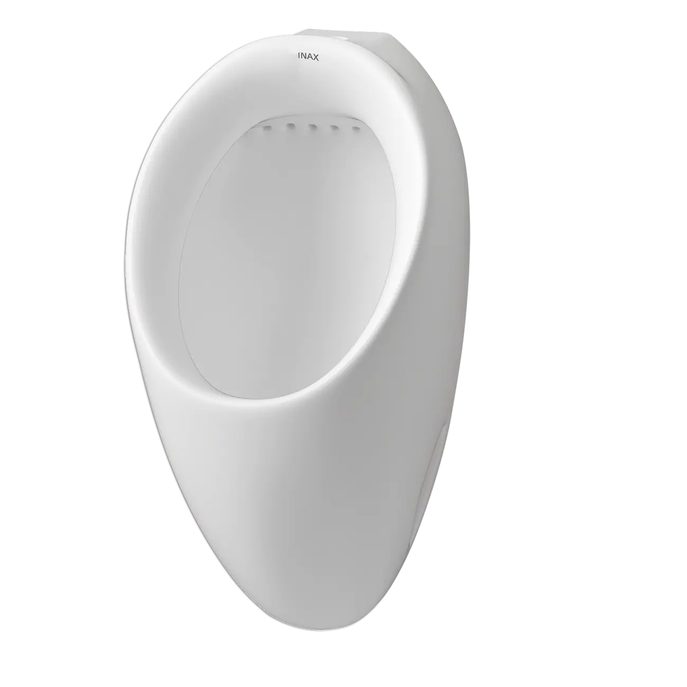
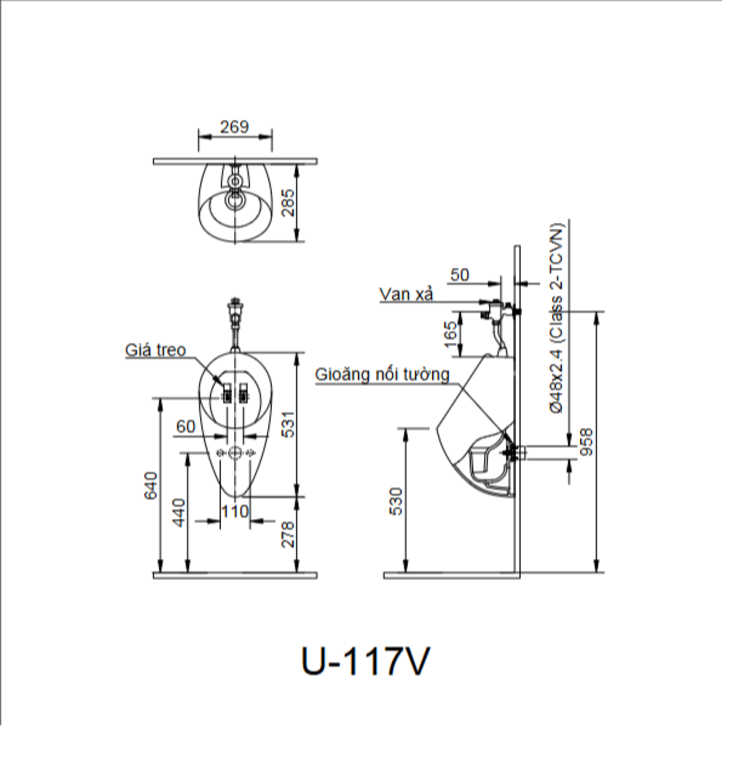

Bồn tiểu nam U-117V nổi bật với thiết kế treo tường gọn gàng và khả năng tiết kiệm nước vượt trội, đặc biệt phù hợp với điều kiện áp lực nước thấp, giúp giải quyết triệt để vấn đề xả rửa yếu kém thường gặp. Sản phẩm thuộc thương hiệu INAX - một trong những thương hiệu thiết bị vệ sinh uy tín đến từ Nhật Bản.Đặc điểm nổi bật của bồn tiểu nam U-177Thiết kế treo tường gọn nhẹ, tối ưu diện tích sử dụngĐược thiết kế dạng treo tường tinh tế và hiện đại, bồn tiểu nam U-117V là lựa chọn lý tưởng giúp tối ưu hóa không gian phòng vệ sinh. Thiết kế này tạo cảm giác không gian thoáng đãng hơn, giúp việc vệ sinh sàn nhà trở nên dễ dàng hơn, từ đó ngăn chặn sự tích tụ của bụi bẩn dưới chân bồn.Với kích thước nhỏ gọn 285 x 269 x 526 mm, bồn tiểu nam U-117V rất phù hợp để lắp đặt trong các phòng vệ sinh có diện tích khiêm tốn hoặc các khu vực cần bố trí nhiều thiết bị, mang đến sự tiện nghi mà không chiếm quá nhiều không gian.Chất liệu bền bỉ, chống trầy caoBồn tiểu nam U-117V được chế tạo từ chất liệu sứ cao cấp, chất lượng với bề mặt nhẵn bóng, chống trầy xước và ăn mòn hiệu quả. Với chất liệu này, sản phẩm không chỉ đảm bảo độ bền mà còn mang đến vẻ ngoài sáng đẹp và lâu dài.Công nghệ tiết kiệm nước độ pháBồn tiểu U-117V được thiết kế để vận hành mới mức xả chi 2L cho mỗi lần sử dụng. Đây là một bước tiến lớn trong công nghệ vệ sinh khi giảm thiểu đáng kể lượng nước tiêu thụ so với các loại bồn tiểu truyền thống.Dù sử dụng lượng nước ít nhưng U-117V vẫn đảm bảo hiệu quả xả rửa tối ưu. Theo đó, hệ thống xả được thiết kế thông minh, tạo ra dòng chảy mạnh mẽ và phân bố đồng đều, giúp cuốn trôi chất thải và giữ lòng bồn luôn sạch sẽ, không gây mùi hôi khó chịu.Phù hợp với áp lực nước thấpBồn tiểu nam U-117V được thiết kế đặc biệt để giải quyết triệt để vấn đề áp lực nước thấp, đặc biệt là đối với các công trình cũ và tòa nhà cao tầng. Với dài áp lực nước từ 0.07 - 0.75 MPa, sản phẩm luôn duy trì hiệu suất xả sạch tối ưu mọi chất thải, giảm thiểu mùi hôi khi sử dụng lâu dài.Bản vẽ bồn tiểu nam U-117VThông số kỹ thuậtChất liệuSứDạngTreo tườngKích thước285 x 269 x 526 mm (Sâu x Rộng x Cao)Đặc điểm- Sản phẩm tiết kiệm nước với mức xả 2L, hiệu quả xả rửa tối ưu - Phù hợp với điều kiện áp lực nước thấp - Áp lực nước 0.07 - 0.75 MPaThương hiệuINAXKhác- Sản phẩm đã bao gồm gioăng nối tường UF-13AWP(VU) - Hotline tư vấn và bảo hành: 18006633
Bồn tiểu nam U-117V
Bồn tiểu thương hiệu INAX.
Đã cập nhật danh sách yêu thích.
DANH MỤC: Bồn tiểu
MÃ SẢN PHẨM: U-117V
DEPTH: 50mm
HEIGHT: 269mm
WIDTH: 531mm
Bồn tiểu nam U-117V nổi bật với thiết kế treo tường gọn gàng và khả năng tiết kiệm nước vượt trội, đặc biệt phù hợp với điều kiện áp lực nước thấp, giúp giải quyết triệt để vấn đề xả rửa yếu kém thường gặp. Sản phẩm thuộc thương hiệu INAX - một trong những thương hiệu thiết bị vệ sinh uy tín đến từ Nhật Bản.Đặc điểm nổi bật của bồn tiểu nam U-177Thiết kế treo tường gọn nhẹ, tối ưu diện tích sử dụngĐược thiết kế dạng treo tường tinh tế và hiện đại, bồn tiểu nam U-117V là lựa chọn lý tưởng giúp tối ưu hóa không gian phòng vệ sinh. Thiết kế này tạo cảm giác không gian thoáng đãng hơn, giúp việc vệ sinh sàn nhà trở nên dễ dàng hơn, từ đó ngăn chặn sự tích tụ của bụi bẩn dưới chân bồn.Với kích thước nhỏ gọn 285 x 269 x 526 mm, bồn tiểu nam U-117V rất phù hợp để lắp đặt trong các phòng vệ sinh có diện tích khiêm tốn hoặc các khu vực cần bố trí nhiều thiết bị, mang đến sự tiện nghi mà không chiếm quá nhiều không gian.Chất liệu bền bỉ, chống trầy caoBồn tiểu nam U-117V được chế tạo từ chất liệu sứ cao cấp, chất lượng với bề mặt nhẵn bóng, chống trầy xước và ăn mòn hiệu quả. Với chất liệu này, sản phẩm không chỉ đảm bảo độ bền mà còn mang đến vẻ ngoài sáng đẹp và lâu dài.Công nghệ tiết kiệm nước độ pháBồn tiểu U-117V được thiết kế để vận hành mới mức xả chi 2L cho mỗi lần sử dụng. Đây là một bước tiến lớn trong công nghệ vệ sinh khi giảm thiểu đáng kể lượng nước tiêu thụ so với các loại bồn tiểu truyền thống.Dù sử dụng lượng nước ít nhưng U-117V vẫn đảm bảo hiệu quả xả rửa tối ưu. Theo đó, hệ thống xả được thiết kế thông minh, tạo ra dòng chảy mạnh mẽ và phân bố đồng đều, giúp cuốn trôi chất thải và giữ lòng bồn luôn sạch sẽ, không gây mùi hôi khó chịu.Phù hợp với áp lực nước thấpBồn tiểu nam U-117V được thiết kế đặc biệt để giải quyết triệt để vấn đề áp lực nước thấp, đặc biệt là đối với các công trình cũ và tòa nhà cao tầng. Với dài áp lực nước từ 0.07 - 0.75 MPa, sản phẩm luôn duy trì hiệu suất xả sạch tối ưu mọi chất thải, giảm thiểu mùi hôi khi sử dụng lâu dài.Bản vẽ bồn tiểu nam U-117VThông số kỹ thuậtChất liệuSứDạngTreo tườngKích thước285 x 269 x 526 mm (Sâu x Rộng x Cao)Đặc điểm- Sản phẩm tiết kiệm nước với mức xả 2L, hiệu quả xả rửa tối ưu - Phù hợp với điều kiện áp lực nước thấp - Áp lực nước 0.07 - 0.75 MPaThương hiệuINAXKhác- Sản phẩm đã bao gồm gioăng nối tường UF-13AWP(VU) - Hotline tư vấn và bảo hành: 18006633
DANH MỤC: Bồn tiểu
MÃ SẢN PHẨM: U-117V
DEPTH: 50mm
HEIGHT: 269mm
WIDTH: 531mm